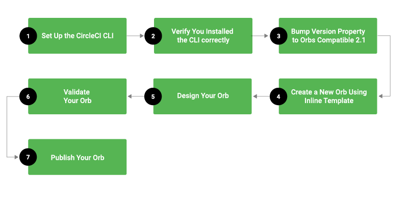

Publishing Orbs
High-Level Orb Publishing Process
Before working with orbs, you may find it helpful to gain a high-level understanding of the end-to-end orbs publishing process. The diagram shown below illustrates the orbs publishing process. 
Step 1 - Set Up the CircleCI CLI
Although it is possible to CI/CD orb publishing using the orbs-tool orb, the most direct and iterable way to build, publish, and test orbs is by using our CLI. Follow the steps below to install and then configure the CircleCI CLI.
Step 2 - Verify You Installed the CLI Correctly
Once you have configured the CircleCI CLI, verify you installed the CLI correctly and the CLI is updated and configured properly before beginning to work with orbs.
Step 3 - Bump Version Property to Orbs-Compatible 2.1
After validating your build configuration, bump the version property to 2.1 so it is compatible for use with orbs.
Step 4 - Create a New Orb Using Inline Template
Using inline orbs are the easiest way to get started with orbs because you can reference them from your existing configuration. Although not required for orb authoring, using inline orbs can simplify the process and is a reasonable approach to authoring orbs quickly and easily.
Step 5 - Design Your Orb
Depending on whether you use an inline template or author your orb independent of this inline template, you will want to add elements (Jobs, Commands, and Executors) to your orb. For more information on these orb elements, refer to the Commands, Jobs, and Executors sections found in the Using Orbs page.
Step 6 - Validate your Orb
When you have finished authoring your orb, simply run the validate command from your CLI. CircleCI provides several different tools to validate your orb, including the circleci/orb-tools orb. For more information on using the circleci/orb-tools orb, see the Validate and Publish Your Orb section.
Step 7 - Publish Your Orb
The final step in the orb publishing process is for you to simply publish your orb using the orb-tools/publish CLI command in the circleci/orb-tools orb. Note that dev orb versions make it possible to publish multiple versions of an orb name (dev orbs are mutable). You must be also be an administrator for the organization where the orb will reside in order to publish the orb.
Note For detailed information about this command, refer to the orb-tools/publish section on this page.
Orbs are made available for use in a configuration through the orbs key in the top level of your 2.1 .circleci/config.yml file.
Orb Publishing Process
After you have finished authoring your orb, you will then want to publish your orb to the CircleCI Orb Registry. The steps listed below describe the orb publishing process in detail.
Publishing an Orb
This section covers the tooling and flow of authoring and publishing your own orbs to the CircleCI Orb Registry.
Orbs may be authored inline in your config.yml file or authored separately and then published to the orb registry for reuse across projects. You must also be an administrator for the organization where your orb will be published in order to complete this task.
[WARNING] Orbs are always world-readable. All published orbs (production and development) can be read and used by anyone. They are not limited to just the members of your organization. In general, CircleCI strongly recommends that you do not put secrets or other sensitive variables into your configuration. Instead, use contexts or project environment variables and reference the names of those environment variables in your orbs.
Using the CLI to Publish Orbs
The circleci CLI has several commands for managing your orb publishing pipeline. The simplest way to learn the CLI is to install it and run circleci help. Refer to Using the CircleCI CLI for details. Listed below are some of the most pertinent commands for publishing orbs:
circleci namespace create <name> <vcs-type> <org-name> [flags]circleci orb create <namespace>/<orb> [flags]circleci orb validate <path> [flags]circleci orb publish <path> <namespace>/<orb>@<version> [flags]circleci orb publish increment <path> <namespace>/<orb> <segment> [flags]circleci orb publish promote <namespace>/<orb>@<version> <segment> [flags]
For a full list of help commands inside the CLI, visit the CircleCI CLI help.
Creating a CircleCI Orb
This section describes each step of the orb publishing process so you will have a better understanding of how to publish your own orb. These examples enables you to follow the process step-by-step to ensure you write an orb that both adheres to CircleCI requirements while also meeting your own needs.
The following sections describe each step in the orb authoring and publishing process:
CircleCI Settings
In the CircleCI app Settings page for your project, pipelines must be enabled (default is to be ON for all new projects). The organization owner must also opt-in to use of uncertified orbs in your organization under the Settings tab on the Security page of the CircleCI app.
Get the new CircleCI CLI
The CircleCI platform enables you to write orbs using the CircleCI CLI. If you choose to work with the CLI, the process of writing orbs will be more efficient because you will be able to use existing CircleCI CLI tools and commands.
Packing A Config
The CLI provides a pack command, allowing you to create a single config.yml file from several separate files. This is particularly useful for breaking up large configs and allows custom organization of your yaml configuration. circleci config pack converts a filesystem tree into a single yaml file based on directory structure and file contents. How you name and organize your files when using the pack command will determine the final outputted config.yml. Consider the following example folder structure:
$ tree
.
├── config.yml
└── foo
├── bar
│ └── @baz.yml
├── foo.yml
└── subtree
└── types.yml
3 directories, 4 files
The unix tree command is great for printing out folder structures. In the example tree structure above, the pack command will map the folder names and file names to yaml keys and the file contents as the values to those keys. Let’s pack up the example folder from above:
$ circleci config pack foo
version: 2.1
bar:
baz: qux
foo: bar
subtree:
types:
ginkgo:
seasonality: deciduous
oak:
seasonality: deciduous
pine:
seasonality: evergreen
Other Config Packing Capabilities
A file beginning with @ will have its contents merged into its parent folder level. This can be useful at the top level of an orb, when one might want generic orb.yml to contain metadata, but not to map into an orb key-value pair.
Thus:
$ cat foo/bar/@baz.yml
{baz: qux}
Is mapped to:
bar:
baz: qux
An Example Packed Config.yml
See the example_config_pack folder to see how circleci config pack could be used with git commit hooks to generate a single config.yml from multiple yaml sources.
Processing A Config
Running circleci config process validates your config, but will also display expanded source configuration alongside your original config (useful if you are using orbs).
Consider the example configuration that uses the hello-build orb:
version: 2.1
orbs:
hello: circleci/hello-build@0.0.5
workflows:
"Hello Workflow":
jobs:
- hello/hello-build
Running circleci config process .circleci/config.yml will output the following (which is a mix of the expanded source and the original config commented out).
# Orb 'circleci/hello-build@0.0.5' resolved to 'circleci/hello-build@0.0.5'
version: 2.1
jobs:
hello/hello-build:
docker:
- image: circleci/buildpack-deps:curl-browsers
steps:
- run:
command: echo "Hello ${CIRCLE_USERNAME}"
- run:
command: |-
echo "TRIGGERER: ${CIRCLE_USERNAME}"
echo "BUILD_NUMBER: ${CIRCLE_BUILD_NUM}"
echo "BUILD_URL: ${CIRCLE_BUILD_URL}"
echo "BRANCH: ${CIRCLE_BRANCH}"
echo "RUNNING JOB: ${CIRCLE_JOB}"
echo "JOB PARALLELISM: ${CIRCLE_NODE_TOTAL}"
echo "CIRCLE_REPOSITORY_URL: ${CIRCLE_REPOSITORY_URL}"
name: Show some of the CircleCI runtime env vars
- run:
command: |-
echo "uname:" $(uname -a)
echo "arch: " $(arch)
name: Show system information
workflows:
Hello Workflow:
jobs:
- hello/hello-build
version: 2
Original config.yml file:
version: 2.1
orbs:
hello: circleci/hello-build@0.0.5
workflows:
\"Hello Workflow\":
jobs:
- hello/hello-build
Validating a Build Config
To ensure that the CircleCI CLI tool has been installed properly, use the CLI tool to validate a build config file by running the following command:
$ circleci config validate
You should see a response similar to the following:
Config file at .circleci/config.yml is valid
See Also
- Refer to Orb Introduction for an introduction to working with orbs.
- Refer to Orbs Concepts for high-level conceptual information about orbs.
- Refer to Orbs FAQ for information on known issues and questions that have been addressed when using orbs.
- Refer to Orbs Reference for examples of reusable orbs, commands, parameters, and executors.
- Refer to Configuration Cookbook for information about how you can use CircleCI orb recipes in your configurations.